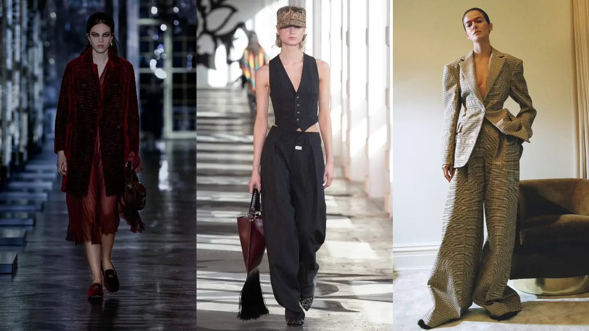
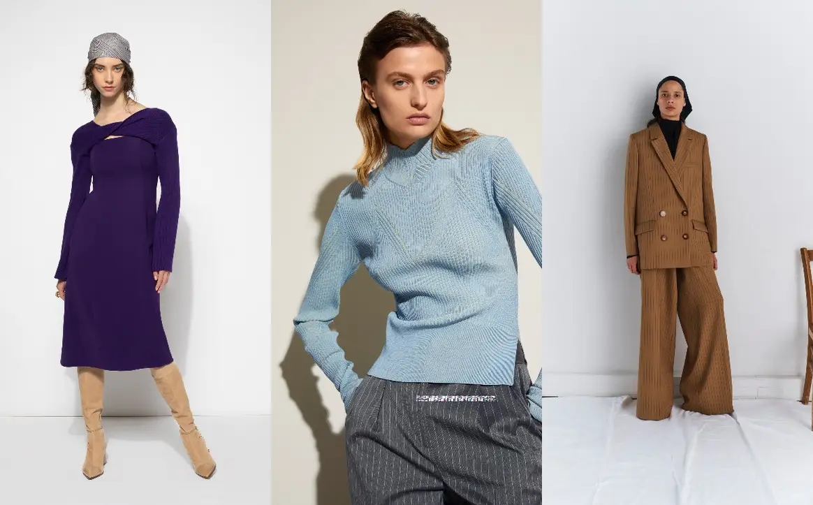
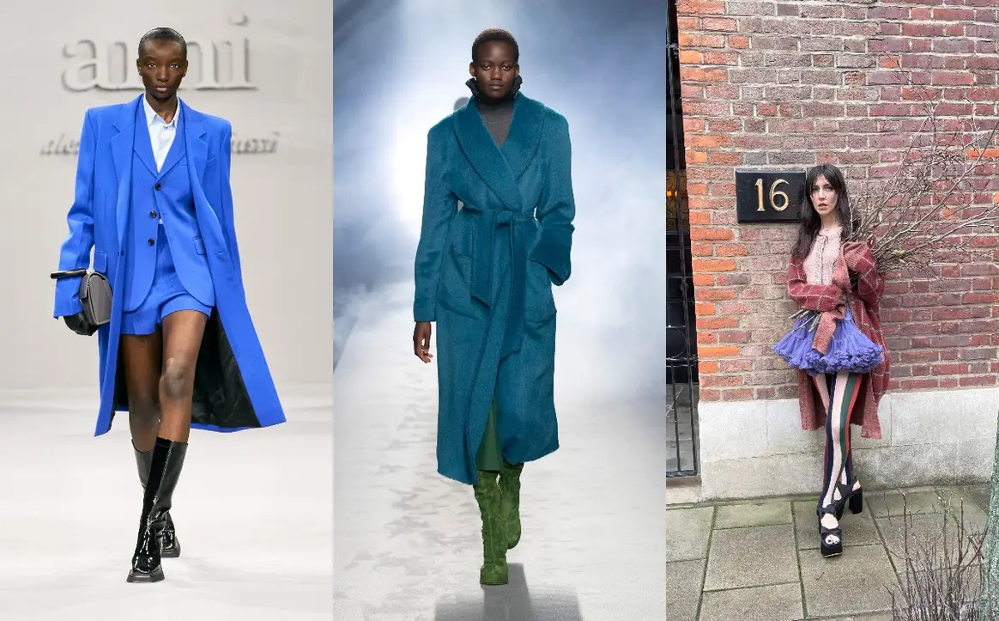

Autumn-winter collections are always packed with smart workwear options that are ideal to embrace the new season. However, each year comes with new trends and twists that make office attire ready for the months ahead. FashionUnited analyses the seasons take on ten back-to-work essentials.
While the black blazer is always a surefire way to look professional and polished, some colourful options have seen the light of day, and are just as appropriate for the days spent in the office. Whether it comes in a bright blue shade such as AMI version or in a less saturated hue, it had look elegant with a head-to-toe neutral look or total-black outfit. At Bora Aksu, the blazer is cinched-in and pink - a softer option that is just as stylish. Less vibrant colours are also welcome, chief among them emerald green, chocolate and burgundy.
This season, tailored and suit trousers have got an upgrade: they are still designed to be fitted and look refined, but are detailed with split hems for some extra visual interest. Paired with boots, they had discreetly reveal some fashion-forward footwear while with pumps they had elongate the leg for a slender silhouette. Theory has some timeless, pared-back black ones whereas Derek Lam has introduced a bright red option that had look good paired with a crisp white shirt.
stayed hidden in wardrobes for the last decade. This season, it is revisited and back in full force with a modern and contemporary approach. Whether it is elongated as a dress or shrinked to wear solo, the suit vest is a good investment to look put-together and keep years down the road. Etro presented a classic, fitted black option and Laura Biagiotti opted for a fuchsia waistcoat paired with a matching collarless blazer
Although we have spotted many full-leather looks in the autumn-winter collections, office-appropriate pieces tend to be trimmed with leather to look both on-trend and professional. Blazers have contrasting collars, shirts are finished with leather sleeves and trousers are detailed with patent faux details. Barbara Buis houndstooth blazer is ideal for the workplace, panelled with leather at the front for a little bit of edge. Adding a belt would also work well, like Arias checked jumpsuit, which is topped with a sleek leather one.

This winter season is all about proportions, and the suit is no exception. From extra-large shoulders to oversized trousers and long hems, the choices are endless and always creative. At Altuzarra, we have seen a nipped-in waist balanced with exaggerated shoulders and paired with palazzo trousers in a plaid, checked pattern. On the other hand, at Maison Rabih Kayrouz, the suit has an elongated profile that hits mid-thighs and the trousers cover the shoes entirely.
Loafers do not have to come in a style designed for the womenswear wardrobe anymore - its unisex version is the one to reach for all season long. Styles are rugged, come in patent leather and have heavy-duty soles that work on the cities sidewalks just as well as in the outdoors. At Cecilie Bahnsen and Celine, the loafers are set on rubber lug soles and made from shiny leather whereas at Christian Dior, velvet is used to create loafers-meet-slippers that nod to dandy styles and are detailed with logos on top.
revisited in palettes of tan, chocolate and dark-brown hues. For the autumn-winter 2021/22 season, it is updated with bright, bold colours that pack a punch and it appears in new, compelling styles while taking new proportions along the way, too. At Andreas Kronthaler for Vivienne Westwood, the plaid pattern is burgundy and oversized or dyed in bright blue and at Marine Serre, it is on a scarf that is draped around the body to look like a bustier over a long-sleeve top.

Tote bags are tried-and-true office favourites, beloved by women and men alike. Even if some slouchy, relaxed designs are sticking around, this season will be all about a structured shape - the kind that easily sits on a desk without any effort. At Balmain, it is ultra-slim and compact, but still has room for daily essentials while at Anteprima, the tote has the size of a handbag but sharp edges to make it look elegant.
with this seasons options, there is no need to let them sit at home all week. Sophisticated iterations are endless: a fine gauge, fitted profile or sleek handle all make for sweaters and cardigans that can be worn both in and out of the office. At Aknvas, the mock-neck sweater comes in a lightweight fabric that is knitted with a graphic pattern and at Adeam, a rich purple knitted dress is detailed with cutouts in a midi length that’d work well with knee-high boots.
Layered over any other workwear essentials, the coat of the autumn-winter 2021/22 season is both comfortable and refined. Many styles tick all the boxes at the same time: a tailored coat with a plush handle, a cosy wrap overcoat or a double-breasted option in luxe shearling. At Auralee, we have seen an upgraded, structured sherpa jacket with a stand collar, which would look good with tailored trousers. And at Alberta Ferretti, the wrap coat comes in a teal colour and is made from an alpaca and wool-blend for a soft, velour handle.